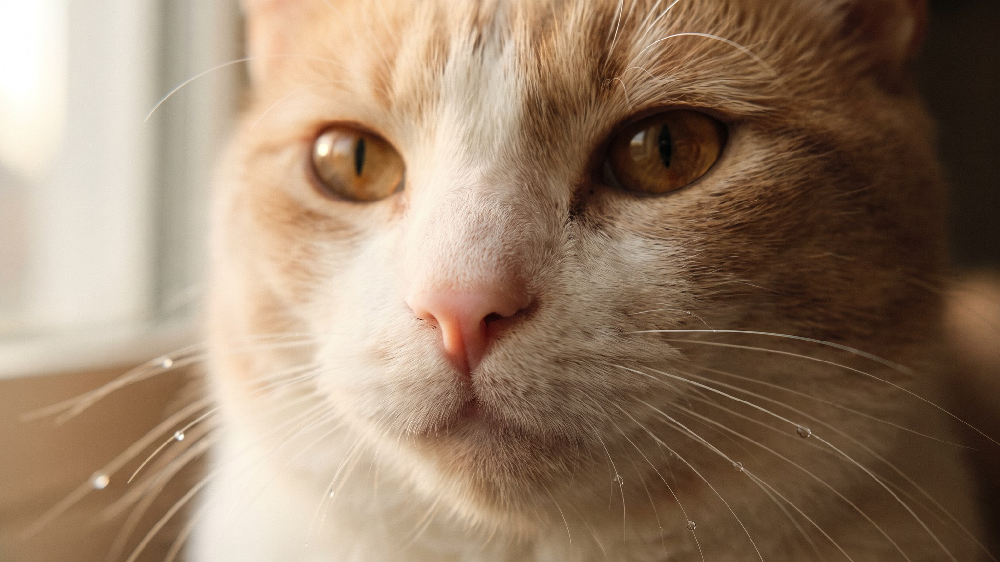

Вы болеете, лежите с температурой, и кошка, которая весь день занималась своими делами, вдруг оказывается рядом. Укладывается на грудь, мурлычет, тычется носом. Это не случайность и не мистика. У кошки несколько каналов, по которым она считывает ваше состояние, и она реагирует на конкретные сигналы.
🐾 Хотите понять, что кошка говорит вам?
Опишите ситуацию или пришлите видео в AnimaLife — AI разберёт поведение вашего питомца и подскажет, что делать. Бесплатно, ответ за минуту.
Разобрать поведение → Разобрать в MAX →
У вас iPhone? AnimaLife есть в App Store
Кошка ориентируется на несколько сигналов одновременно.
Голос и звуки. Кошки хорошо различают интонацию. Тихий, подавленный или хриплый голос отличается от обычного, и кошка это слышит. Плач, кашель, долгое молчание там, где обычно звучат привычные слова. Всё это отклонение от нормы, которое она замечает.
Поза и движения. Когда человек болеет или расстроен, он меньше двигается, лежит иначе, сутулится. Кошка привязана к ритму хозяина и хорошо чувствует, когда тот нарушается. Вы не встали утром в привычное время, не открыли форточку, не налили кофе. Это уже сигнал.
Запах. При болезни и стрессе тело выделяет другие вещества: меняется запах пота, дыхания, кожи. Нос у кошки в 14 раз чувствительнее человеческого. Она буквально нюхает ваше самочувствие.
Нарушенный распорядок. Кошки живут по расписанию. Когда хозяин весь день лежит на диване вместо того, чтобы уходить на работу, возвращаться в обычное время и кормить в привычный час: животное это регистрирует и реагирует на перемены.
Это зависит от конкретной кошки и от того, насколько она привязана к хозяину. Кошки с надёжной привязанностью при тревожной ситуации ищут именно того человека, которому доверяют. Одни приходят и ложатся рядом, другие просто сидят на расстоянии вытянутой руки и смотрят.
Те кошки, у которых с хозяином более дистантные отношения, могут вести себя иначе: прятаться, беспокоиться или держаться в стороне. Нет единой реакции для всех кошек.
Популярна версия о том, что кошки «лечат мурлыканьем» с частотой вибрации, которая восстанавливает ткани. Доказательной базы у неё нет. Мурлыканье рядом с расстроенным или больным хозяином означает контакт и спокойствие, а не физиотерапию.
Кошка пришла к вам. Просто дайте ей быть рядом. Не нужно заставлять её оставаться на месте или прогонять. Она сама выберет дистанцию.
Если кошка часто ищет контакт именно в моменты, когда вам плохо, это говорит о сильной привязанности. Она хорошо вас знает и заметила отклонение от нормального состояния. Это повод ценить эти отношения и поддерживать стабильный распорядок: кошки чувствуют себя спокойнее, когда жизнь предсказуема.
Случается и обратное: кошка ведёт себя тревожно или настойчиво, ходит кругами, мяукает без причины, не отходит, а потом выясняется, что у хозяина высокое давление или начинается температура. Несколько задокументированных случаев описаны в поведенческой литературе, но механизм точно не установлен.
Если кошка без видимой причины резко изменила поведение и явно чем-то обеспокоена, стоит обратить на это внимание. Иногда она замечает что-то раньше вас.
Материал носит информационный характер и не заменяет очную консультацию ветеринара.
🐾 У вашей кошки так же?
Расскажите в AnimaLife, как ведёт себя ваш питомец, — приложение объяснит причину и даст пошаговый план. Бесплатно, без записи к специалисту.
Разобрать свой случай → Разобрать в MAX →
У вас iPhone? AnimaLife есть в App Store
🐾 Понравился разбор?
Подпишитесь на канал — каждый день разбираем по одному тревожному симптому у кошек и собак: что в пределах нормы, а когда пора к врачу. Подпишитесь, чтобы не пропустить разбор, который может спасти здоровье вашего питомца.